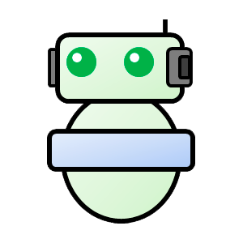

Bird classification
Clasificación de imágenes de aves utilizando la cámara web y Tensorflow.js
Galapagos Birds: Classification and Conservation
Visit the website of the Charles Darwin Foundation a non-profit organization dedicated to scientific research and conservation of the Galapagos Islands.